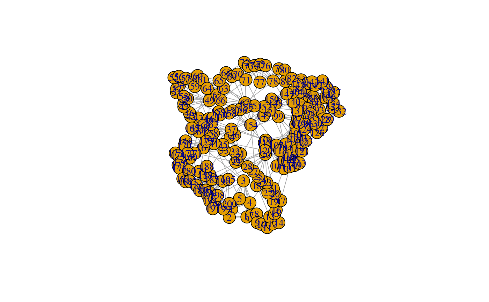
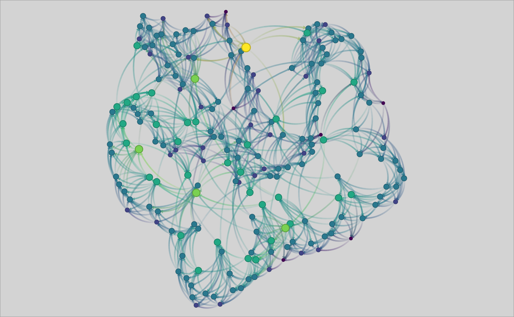

Plot a network
nplot(x, layout = igraph::layout_with_fr(x), vertex.size = igraph::degree(x), bg.col = "lightgray", vertex.shape = 100, vertex.color = NULL, vertex.size.range = c(0.01, 0.03), vertex.frame.color = NULL, vertex.shape.degree = 0, edge.width = NULL, edge.width.range = c(1, 2), edge.arrow.size = NULL, edge.color.mix = 0.5, edge.color.alpha = 0.5, edge.curvature = pi/3, edge.line.type = NULL, edge.line.lty = "solid", edge.line.breaks = 20, edge.line.pch = 20)
| x | An |
|---|---|
| layout | Numeric two-column matrix with the graph layout. |
| vertex.size | Numeric vector of length |
| bg.col | Color of the background. |
| vertex.shape | Numeric vector of length |
| vertex.color | Vector of length |
| vertex.size.range | Vector of length |
| vertex.frame.color | Vector of length |
| vertex.shape.degree | Vector of length |
| edge.width | Vector of length |
| edge.width.range | Vector of length |
| edge.arrow.size | Vector of length |
| edge.color.mix | Numeric vector of length |
| edge.color.alpha | Numeric vector of length |
| edge.curvature | Numeric vector of length |
| edge.line.type | Vector of length |
| edge.line.lty | Vector of length |
| edge.line.breaks | Vector of length |
| edge.line.pch | Vector of length |
library(igraph) library(netplot) set.seed(1) x <- sample_smallworld(1, 200, 5, 0.03) plot(x) # ala igraphnplot(x) # ala netplot